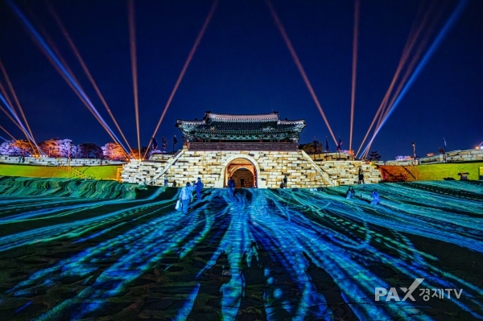
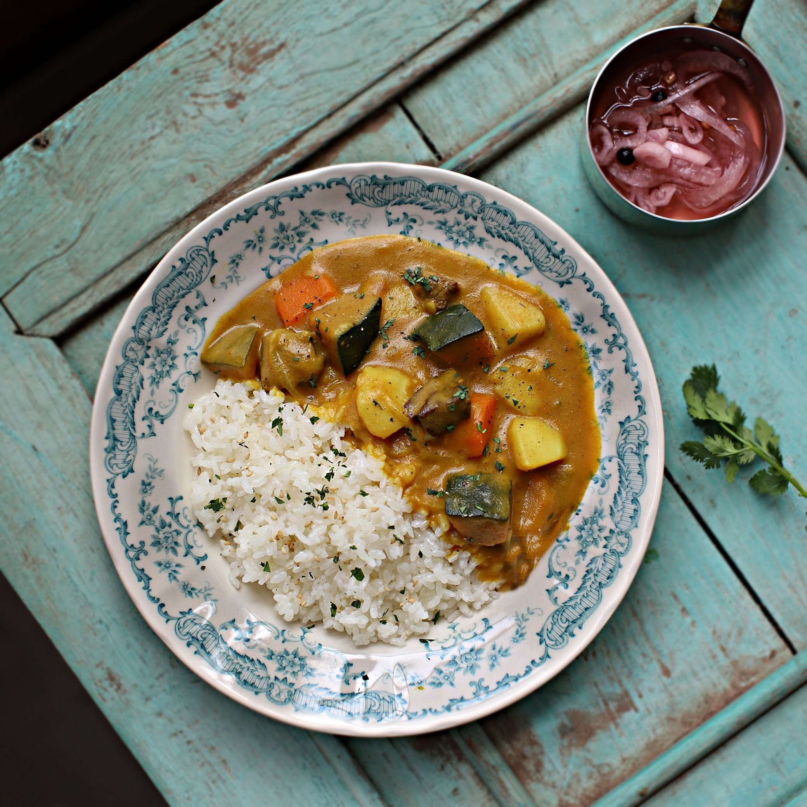

내가 태어난 곳 : 수원

수원시
경기도 남부에 위치한 특례시이자 대한민국 기초자치단체 중에서 가장 인구가 많은 도시.[10] 경기도청 소재지, 경기도 최대도시로 북으로 의왕시, 동으로 용인시, 남으로 화성시, 서로는 안산시와 접한다. 일반구는 장안구, 권선구, 팔달구, 영통구의 4개가 있으며, 특례시 중에서는 5개 구를 가진 창원시 다음으로 많은 일반구를 두고 있다.[11]
수원은 경기도에서 최초로 읍으로 승격된 3곳 중 한 곳이다. 1930년대 경기도에서 최초 읍'으로 승격된 지역은 수원, 안성, 개성이다. 과거나 현재나 수원은 경기도에서 가장 큰 도시이다.
수도권의 다른 도시들 고양시, 구리시, 과천시, 안양시, 성남시, 부천시 등이 서울의 위성도시적 성격이 강했던 것과 다르게[12][13] 이전부터 자족도시의 특성이 강했으며 지금도 수원시는 자족도시에 가까운 경기도 행정·경제의 중심지적인 위치를 점하고 있다. 이는 조선시대부터 경기 행정편제가 개편되면서 이때 광주와 수원의 관할인 군현을 두어 경기좌도라 하였고, 양주·부평·철원·연안의 관할인 군현을 경기우도했으며 1413년에 경기 영역을 다시 한 번 조정하여 좌·우도로 나누지 않고 경기로 확정하면서 감영을 수원에 설치해 도시의 자족기능이 형성된 것에 기인한다. 실제로 수원은 수원시 바깥 다른 지역들과는 생활권이 꽤 다르고, 문화도 미묘한 차이가 있다.[14][15]
수원은 자립적인 경제권역을 형성하고 있으며, 그 상권도 규모가 큰 편이다. 자족기능이 많이 발달한 경기남부 도시 중에서도 수원의 서울 출퇴근자 비율은 5.5%로, 상당히 낮은 편이다.
내가 가보고 싶은 곳
일본
나카미세 상점가

나카미세는 도쿄의 흔한 상점가가 아니에요. 이곳의 역사는 수 세기 전으로 거슬러 올라가죠. 200m 남짓한 보행자 전용 도로 옆으로 100여 개의 상점이 늘어선 나카미세에는 옛 일본의 정서가 그대로 녹아 있어요. 전통 유카타, 일본 가면, 인형, 접이식 부채, 티셔츠 등이 대표적인 상품이죠. 쌀로 만든 과자인 센베이, 닌교야키(달콤한 팥 앙금이 든 작은 빵), 당고(단맛이 일품인 경단), 카미나리오코시(바삭한 식감의 알록달록한 일본 전통 과자) 같은 일본 전통 간식은 꼭 드셔보세요. 나카미세 상점가는 센소지 인근의 아사쿠사 중심부에 있습니다.
도쿄 타워

도쿄 타워는 도쿄의 상징이라고 할 수 있는 유명한 랜드마크죠. 에펠탑을 본떠 설계한 도쿄타워는 관동 지역에 대규모 방송 송신탑이 필요했던 1958년에 완공되었어요. 외관은 에펠탑과 유사하지만 도쿄 타워가 13m 더 높아요. 지금도 송신탑으로 사용되고 있지요. 150m와 250m 높이의 두 실내 전망대와 기념품점, 게임 코너, 레스토랑, 패스트푸드점, 놀이공원 등의 여러 시설이 타워 내에 자리하고 있는데요. 특히 놀이공원에는 옛 향수를 불러일으키는 놀이기구가 많아요. 재즈, 알앤비, 보사노바 팬이라면 매주 수요일과 목요일 1층 대전망대의 클럽 333 특설무대에서 펼쳐지는 라이브 음악 공연을 놓치지 마세요. 공연은 추가 비용 없이 일반 전망대 요금을 지불하시면 관람하실 수 있죠. 250m의 높이를 자랑하는 특별전망대는 바람이 거세게 부는 날에는 문을 닫거나 운영 시간이 변경될 수 있어요.
내가 좋아하는 음식
카레라이스

인도 요리에서 널리 쓰는 소스인 커리[2]와 영국에서 자국 요리인 스튜와 접목, 스튜에 들어가는 각종 고기와 채소를 커리에 넣는 방식이 추가되었고, 이게 일본으로 전해져 찰기가 많은 단립종 쌀을 주식으로 먹는 일본인 입맛에 맞춰 프랑스 요리 기법인 루(Roux)를 사용하여 수프를 되직하게 만들어 일본식 서양요리로 현지화한 음식이다.
마라탕
마라탕의 기원이 되는 음식은 쓰촨 지방의 음식인 마오차이(冒菜)다. 청두시에서는 마오차이를 흔히 '1인용 훠궈'라고 한다. 혼자나 둘이서는 여러 재료를 다양하게 시켜야 하는 훠궈를 먹기가 부담스럽기 때문에 다양한 재료를 대나무 채에 한데 모아 담아 한꺼번에 훠궈 국물에 끓인 다음 1인분씩 그릇에 덜어서 내놓은 것이 마오차이의 유래다. 마오차이는 길거리에서도 여전히 판매되지만 고급화된 프랜차이즈와 대형 매장도 여럿 존재한다.